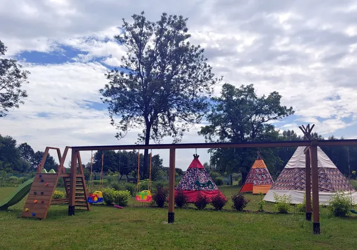
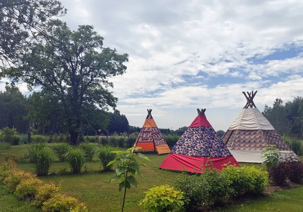
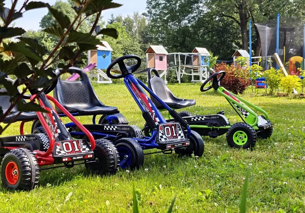
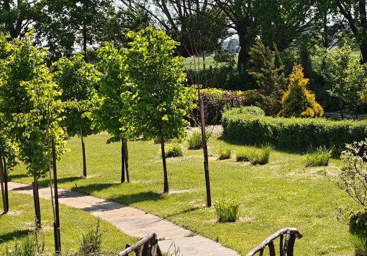
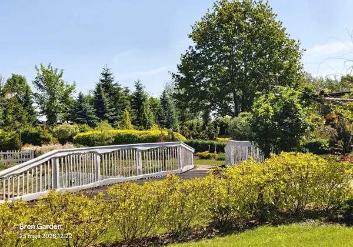
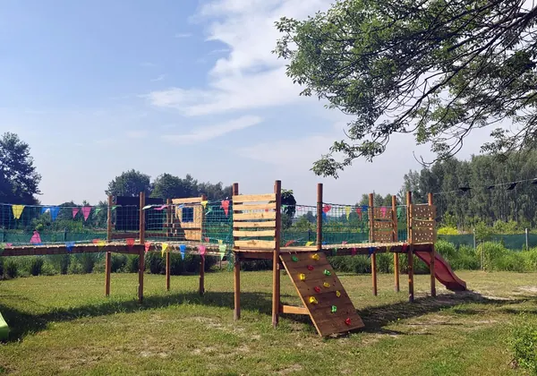
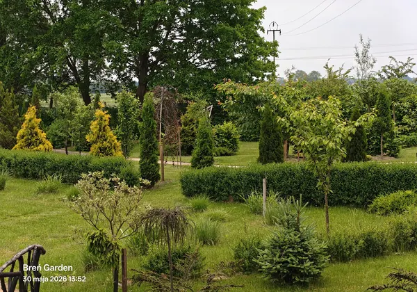

Rośliny i trawy ozdobne
Dużo gatunków traw, krzewów, kwiatów i drzew tworzy ogród, który wygląda inaczej w zależności od sezonu.
Breń Osuchowski · gm. Czermin
Zielona przestrzeń tworzona z pasją: alejki, mostki, kwiaty, trawy ozdobne, ptactwo, zakątki do odpoczynku i atrakcje dla dzieci. Idealne miejsce na sesje fotograficzne, rodzinny spacer i kameralne wydarzenia w plenerze.
To nie jest zwykły trawnik z kilkoma rabatami. To przestrzeń pełna detali: kompozycje roślinne, dekoracyjne trawy, kwitnące krzewy, drewniane mostki, ławki, naturalne przejścia, tipi, place zabaw i zwierzęta ozdobne.
Każda część ogrodu może być osobnym tłem: romantycznym, rodzinnym, dziecięcym albo naturalnym. Dzięki temu goście nie przyjeżdżają tylko „obejrzeć ogród” — przyjeżdżają przeżyć spokojny dzień i wrócić ze zdjęciami.
Dużo gatunków traw, krzewów, kwiatów i drzew tworzy ogród, który wygląda inaczej w zależności od sezonu.
Mostki, alejki, ławki, tipi i kolorowe kompozycje roślinne sprawdzają się jako naturalne plenerowe tła.
Ozdobne kury, bażanty i inne ptaki mogą stać się częścią edukacyjnej ścieżki oraz dodatkową atrakcją dla dzieci.
Zjeżdżalnie, drewniane konstrukcje, gokarty i przestrzeń do ruchu dają rodzinom powód, by zostać dłużej.
Drewno, zieleń, ścieżki i zakamarki budują spokojny charakter ogrodu — dobry na odpoczynek i kameralne spotkania.
Każda roślina, ptak lub rzeźba może dostać własny kod QR z opisem, ciekawostkami i nagraniem lektora.
Rodzinne, dziecięce, komunijne, ślubne, ciążowe, narzeczeńskie i sezonowe. Kilka różnych scenerii w jednym miejscu.
Urodziny, spotkania rodzinne, małe przyjęcia, pikniki i wydarzenia okolicznościowe w plenerze.
Wejścia indywidualne lub rodzinne — spokojna trasa przez alejki, rabaty, mostki i zakątki ogrodu.
Mini ścieżka o roślinach, trawach ozdobnych, ptakach i pracy ogrodnika — dobra dla dzieci, szkół i przedszkoli.
„Breń Garden ma potencjał, by być nie tylko ogrodem do zwiedzania, ale miejscem, do którego wraca się po zdjęcia, ciszę, kolory i rodzinny czas.”
Wybrane zdjęcia pokazują różne strefy: plener fotograficzny, strefę dziecięcą, alejki, mostki, kwiaty i zielone kompozycje.







Przy wybranych roślinach, ptakach, rzeźbach i zakątkach ogrodu można umieścić dyskretne tabliczki z kodami QR. Po zeskanowaniu gość otrzyma krótki opis, ciekawostki oraz nagranie lektora AI.
To prosty sposób, żeby ogród był jednocześnie atrakcją turystyczną, plenerem zdjęciowym i miejscem edukacyjnym.
Krótki opis, ciekawostka, zdjęcie, przycisk „Odtwórz lektora” i mapa najbliższych punktów.
Breń Garden · Breń Osuchowski, gm. Czermin
Terminy, cennik, zasady wejścia i dostępność ogrodu najlepiej ustalać bezpośrednio z właścicielem.
{kind=link}
{kind=link}
{kind=link}
{kind=link}
{kind=link}
{kind=link}
{kind=link}
{kind=link}